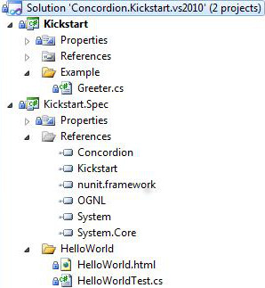

To kickstart this tutorial, we've created a "Hello World!" project with the following structure.
Download: concordion-net-kickstart.zip
It contains the latest stable version of Concordion.NET, all its dependencies, and a simple "Hello World!" example.
"HelloWorldTest.cs" fixture. The name of the
fixture and the HTML file share the same base name. The fixture has
an optional suffix of "Test" - for example, it may be named
"HelloWorld.cs" or "HelloWorldTest.cs".Concordion.NET requires the .NET framework with version 4.0 or higher. You have to add the following references to your project:
To be able to run the Concordion.NET tests with NUnit you need to make the Concordion-NUnit addin available to your installation of NUnit:
These dependencies are included in the distribution.
A Concordion active specification consists of two parts:
Both files must be in the same package. In order for the magic to happen, the document must first be instrumented with commands. Concordion commands are specified as attributes on elements in the XHTML document. Web browsers ignore attributes that they don't understand, so these commands are effectively invisible.
The commands use a "concordion" namespace defined at
the top of each document as follows:
<html xmlns:concordion="http://www.concordion.org/2007/concordion">